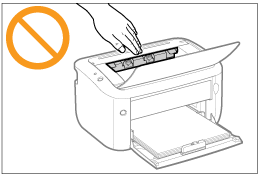

|
WARNUNG
|
|
Zerlegen oder modifizieren Sie den Drucker nicht. Im Druckerinneren befinden sich Teile, die unter hoher Temperatur und Hochspannung stehen, was zu einem Brand oder Stromschlag führen kann.
Elektrische Teile können gefährlich sein, wenn sie nicht ordnungsgemäß verwendet werden. Lassen Sie nicht zu, dass Kinder das Netzkabel oder andere Kabel, interne Zahnräder oder elektrische Teile berühren.
Wenn der Drucker ungewöhnliche Geräusche erzeugt oder Rauch, Hitze oder unübliche Gerüche abgibt, schalten Sie den Drucker unverzüglich über den Netzschalter aus, und ziehen Sie die Schnittstellenkabel heraus, falls sie angeschlossen sind. Ziehen Sie dann den Netzstecker aus der Netzsteckdose, und wenden Sie sich an Ihren autorisierten Canon-Händler vor Ort. Wird der Drucker weiter verwendet, kann es zu einem Brand oder Stromschlag kommen.
Verwenden Sie keine entzündlichen Sprays in der Nähe des Druckers. Wenn entflammbare Substanzen in Kontakt mit den elektrischen Teilen im Druckerinneren kommen, kann dies zu einem Brand oder Stromschlag führen.
Schalten Sie den Drucker vor dem Transport stets über den Netzschalter aus, und ziehen Sie den Netzstecker sowie die Schnittstellenkabel heraus. Wird dies nicht beachtet, kann es zu einer Beschädigung der Kabel kommen, was zu einem Brand oder Stromschlag führen kann.
Stellen Sie nach dem Transport des Druckers sicher, dass der Netzstecker oder Netzanschluss fest eingesteckt ist. Andernfalls kann es zu einer Überhitzung und einem Brand kommen.
Lassen Sie keine Büroklammern, Heftklammern oder andere Metallobjekte in den Drucker fallen. Verschütten Sie darüber hinaus kein Wasser, keine Flüssigkeiten oder andere entzündlichen Substanzen (Alkohol, Benzin, Farbverdünner usw.) in das Druckerinnere. Wenn diese Gegenstände in Kontakt mit den Hochspannungsbereichen im Druckerinneren kommen, kann dies zu einem Brand oder Stromschlag führen. Wenn diese Substanzen auf dem Drucker verschüttet werden oder in den Drucker gelangen, schalten Sie den Drucker unverzüglich über den Netzschalter aus, und ziehen Sie die Schnittstellenkabel heraus, falls sie angeschlossen sind. Ziehen Sie dann den Netzstecker aus der Netzsteckdose, und wenden Sie sich an Ihren autorisierten Canon-Händler vor Ort.
Wenn ein USB-Kabel angeschlossen oder getrennt wird, während sich der Netzstecker in der Netzsteckdose befindet, fassen Sie nicht den Metallteil des Steckers an, da dies sonst zu einem Stromschlag führen kann.
|
|
VORSICHT
|
|
Stellen Sie keine schweren Gegenstände auf den Drucker. Der Gegenstand oder der Drucker kann sonst herunterfallen und zu Verletzungen von Personen führen.
Schalten Sie den Drucker über den Netzschalter aus, wenn er einige Zeit lang, beispielsweise über Nacht, nicht verwendet wird. Schalten Sie den Drucker aus, und ziehen Sie den Netzstecker heraus, wenn der Drucker über einen längeren Zeitraum, beispielsweise über mehrere Tage, nicht verwendet wird.
Gehen Sie beim Öffnen und Schließen von Abdeckungen vorsichtig vor. Achten Sie darauf, dass Sie sich nicht die Finger verletzen.
Halten Sie Ihre Hände und Kleidung fern von den Rollen im Ausgabebereich. Auch wenn der Drucker nicht druckt, können sich die Rollen plötzlich drehen und Ihre Hände oder Kleidung einklemmen, was zu Verletzungen führen kann.
Der Ausgabeschlitz ist während des Druckvorgangs und unmittelbar danach stark erhitzt. Berühren Sie den Bereich um den Ausgabeschlitz nicht, da dies sonst zu Verbrennungen führen kann.
 Bedrucktes Papier kann unmittelbar nach der Ausgabe heiß sein. Gehen Sie vorsichtig vor, wenn Papier entfernt und ausgerichtet wird, und zwar besonders bei fortgesetztem Druck. Andernfalls können Sie sich Verbrennungen zuziehen.
Der im Drucker verwendete Laserstrahl kann für Menschen schädlich sein. Da der Laserstrahl in der Lasereinheit durch eine Abdeckung vollständig verschlossen ist, kann die Laserstrahlung während des normalen Druckerbetriebs nicht nach außen dringen. Lesen Sie die folgenden Bemerkungen und Sicherheitshinweise.
Öffnen Sie nur die Abdeckungen, die Sie laut diesem Handbuch öffnen dürfen.
Entfernen Sie nicht den an der Lasereinheit im Inneren des Druckers angebrachten Warnaufkleber.
 Falls der Laserstrahl aus dem Produkt austritt, kann eine Bestrahlung der Augen schwere Sehschäden zur Folge haben.
|